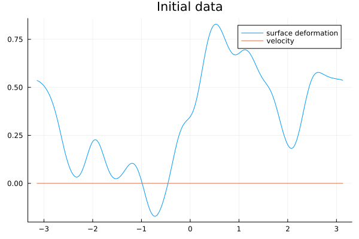
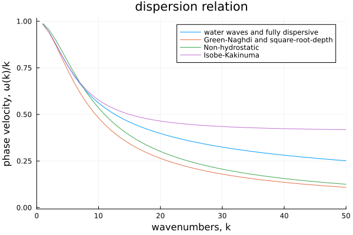

Shallow-Water


In this notebook, we provide a comparison of several non-hydrostatic shallow-water models for the propagation of surface gravity waves. Specifically, we compare the standard Green-Naghdi model
- first with the non-hydrostatic model of Bristeau, Mangeney, Sainte-Marie and Seguin and the square-root depth system of Cotter, Holm and Percival,
- then with the fully dispersive counterpart of Duchêne, Israwi and Talhouk,
- finally with the Isobe-Kakinuma model.
Initialization
Import package
using WaterWaves1D
import LinearAlgebra.normDefine parameters of the problem
param = (
# Physical parameters. Variables are non-dimensionalized as in Lannes, The water waves problem, isbn:978-0-8218-9470-5
μ = 0.1, # shallow-water dimensionless parameter
ϵ = 0.25, # nonlinearity dimensionless parameter
# Numerical parameters
N = 2^9, # number of collocation points
L = π, # half-length of the numerical tank (-L,L)
T = 1, # final time of computation
dt = 0.01, # timestep
);Define initial data
random = Random(param; L = 1); # randomly generate initial data. Type `?random` for possible parameterization.
init = Init(random.η, zero); # we set the initial velocity as zero to avoid inconsistencies among different models.
using Plots
x = Mesh(param).x
plot(x, [init.η(x) init.v(x)], label = ["surface deformation" "velocity"], title = "Initial data")
First-order non-hydrostatic models
Here we shall compare the Green-Naghdi model with the non-hydrostatic model of Bristeau, Mangeney, Sainte-Marie and Seguin and the square-root depth system of Cotter, Holm and Percival
Set up initial-value problems for different models to compare
WW = Problem(WaterWaves(param, dealias = 1, verbose = false), init, param)
GN = Problem(SerreGreenNaghdi(param; dealias = 0, iterate = true, precond = true), init, param)
NH = Problem(NonHydrostatic(param; dealias = 0, iterate = true, precond = true), init, param)
SRD = Problem(SquareRootDepth(param; dealias = 0, iterate = true, precond = true), init, param)
solve!(WW);solve!(GN);solve!(NH);solve!(SRD);┌ Info: Now solving the initial-value problem water waves
│ with timestep dt=0.01, final time T=1.0,
└ and N=512 collocation points.
┌ Info: Now solving the initial-value problem Green-Naghdi
│ with timestep dt=0.01, final time T=1.0,
└ and N=512 collocation points.
┌ Info: Now solving the initial-value problem non-hydrostatic
│ with timestep dt=0.01, final time T=1.0,
└ and N=512 collocation points.
┌ Info: Now solving the initial-value problem square-root depth
│ with timestep dt=0.01, final time T=1.0,
└ and N=512 collocation points.Plot solutions at final time
plot([WW, GN, SRD, NH])
plt = plot([(WW, GN), (WW, SRD), (WW, NH)])
display(plt)
WWη, WWv, WWx, = solution(WW)
GNη, = solution(GN, x = WWx);errGN = norm(WWη - GNη) / sqrt(length(x))
SRDη, = solution(SRD, x = WWx);errSRD = norm(WWη - SRDη) / sqrt(length(x))
NHη, = solution(NH, x = WWx);errNH = norm(WWη - NHη) / sqrt(length(x))
print("Errors (in l²). Serre-Green-Naghdi: $errGN, Square-root depth: $errSRD, Non-hydrostatic: $errNH")Errors (in l²). Serre-Green-Naghdi: 0.027515918391063054, Square-root depth: 0.018189248589957477, Non-hydrostatic: 0.007962082739169884Using the notation and terminology of Lannes, The water waves problem (isbn:978-0-8218-9470-5),
- the Green-Naghdi model is consistent with precision O(μ²)
- the Square-root-depth model is consistent with precision O(μ²+μϵ)
- the Non-hydrostatic model is consistent with precision O(μ)
This can be checked by varying the parameters μ,ϵ
It happens however quite often when μ is fairly large (or L in the random initial data is small) that the non-hydrostatic model provides a better approximation than the Green-Naghdi and square-root-depth model. A possible explanation stems from the fact that the wave frequency of the former (ω(k)=±|k|(1/(1+¼μ|k|^2))^½) approaches better the wave frequency of the water waves system (ω(k)=±|k|(tanh(√μ|k|)/(√μ|k|))^½) for a finite range of wavenumbers, k, while the group velocity of the latter (ω(k)=±|k|(1/(1+⅓μ|k|^2))^½) is more accurate only for small wavenumbers.
Fully dispersive model
Here we shall compare the Green-Naghdi model with the fully dispersive counterpart of Duchêne, Israwi and Talhouk.
Set up initial-value problems for different models to compare
WW = Problem(WaterWaves(param, dealias = 1, verbose = false), init, param)
GN = Problem(SerreGreenNaghdi(param; dealias = 0, iterate = true, precond = true), init, param)
WGN = Problem(WhithamGreenNaghdi(param; dealias = 0, iterate = true, precond = true), init, param)
solve!(WW);solve!(GN);solve!(WGN);┌ Info: Now solving the initial-value problem water waves
│ with timestep dt=0.01, final time T=1.0,
└ and N=512 collocation points.
┌ Info: Now solving the initial-value problem Green-Naghdi
│ with timestep dt=0.01, final time T=1.0,
└ and N=512 collocation points.
┌ Info: Now solving the initial-value problem Whitham-Green-Naghdi
│ with timestep dt=0.01, final time T=1.0,
└ and N=512 collocation points.Plot solutions at final time
plot([WW, GN, WGN])
plt = plot([(WW, GN), (WW, WGN)])
display(plt)
WWη, WWv, WWx, = solution(WW)
GNη, = solution(GN, x = WWx);errGN = norm(WWη - GNη) / sqrt(length(x))
WGNη, = solution(WGN, x = WWx);errWGN = norm(WWη - WGNη) / sqrt(length(x))
print("Errors (in l²). Serre-Green-Naghdi: $errGN, Whitham-Green-Naghdi: $errWGN")Errors (in l²). Serre-Green-Naghdi: 0.027515918391063054, Whitham-Green-Naghdi: 0.003223824468835256Using the notation and terminology of Lannes, The water waves problem (isbn:978-0-8218-9470-5),
- the Green-Naghdi model is consistent with precision O(μ²)
- the fully dispersive model is consistent with precision O(μ²ϵ)
This can be checked by varying the parameters μ,ϵ
Higher-order model
Here we shall compare the Green-Naghdi model with the 2nd order Isobe-Kakinuma model.
Set up initial-value problems for different models to compare
WW = Problem(WaterWaves(param, dealias = 1, verbose = false), init, param)
GN = Problem(SerreGreenNaghdi(param; dealias = 0, iterate = true, precond = true), init, param)
IK = Problem(IsobeKakinuma(param; dealias = 0, iterate = true, precond = true), init, param)
solve!(WW);solve!(GN);solve!(IK);┌ Info: Now solving the initial-value problem water waves
│ with timestep dt=0.01, final time T=1.0,
└ and N=512 collocation points.
┌ Info: Now solving the initial-value problem Green-Naghdi
│ with timestep dt=0.01, final time T=1.0,
└ and N=512 collocation points.
┌ Info: Now solving the initial-value problem Isobe-Kakinuma
│ with timestep dt=0.01, final time T=1.0,
└ and N=512 collocation points.Plot solutions at final time
plot([WW, GN, IK])
plt = plot([(WW, GN), (WW, IK)]; fourier = false)
display(plt)
WWη, WWv, WWx, = solution(WW)
GNη, = solution(GN, x = WWx);errGN = norm(WWη - GNη) / sqrt(length(x))
IKη, = solution(IK, x = WWx);errIK = norm(WWη - IKη) / sqrt(length(x))
print("Errors (in l²). Serre-Green-Naghdi: $errGN, Isobe-Kakinuma: $errIK")Errors (in l²). Serre-Green-Naghdi: 0.027515918391063054, Isobe-Kakinuma: 0.004355759638944959Using the notation and terminology of Lannes, The water waves problem (isbn:978-0-8218-9470-5),
- the Green-Naghdi model is consistent with precision O(μ²)
- the Isobe-Kakinuma model is consistent with precision O(μ³)
This can be checked by varying the parameters μ,ϵ
Dispersion relations
We compare the dispersion relations of the models appearing in this notebook. Recall variables are non-dimensionalized. For instance, the real dispersion relation of the water waves system (linearized about the rest state) is ω(ξ)² = g|ξ| tanh(d|ξ|), where g is the gravity acceleration and d the depth of the layer.
k = abs.(Mesh(param).k);μ = param.μ
ωWW(k) = k .* (tanh.(√μ * k) ./ (√μ * k)) .^ (1 / 2)
ωNH(k) = k .* (1 ./ (1 .+ μ / 4 * k .^ 2)) .^ (1 / 2)
ωGN(k) = k .* (1 ./ (1 .+ μ / 3 * k .^ 2)) .^ (1 / 2)
ωIK(k) = k .* ((1 .+ μ / 15 * k .^ 2) ./ (1 .+ 2 * μ / 5 * k .^ 2)) .^ (1 / 2)
plot(
k, [ωWW(k) ./ k ωGN(k) ./ k ωNH(k) ./ k ωIK(k) ./ k],
label = ["water waves and fully dispersive" "Green-Naghdi and square-root-depth" "Non-hydrostatic" "Isobe-Kakinuma"],
xlabel = "wavenumbers, k", ylabel = "phase velocity, ω(k)/k",
title = "dispersion relation"
)
xlims!(0, 5 / μ)
This page was generated using Literate.jl.